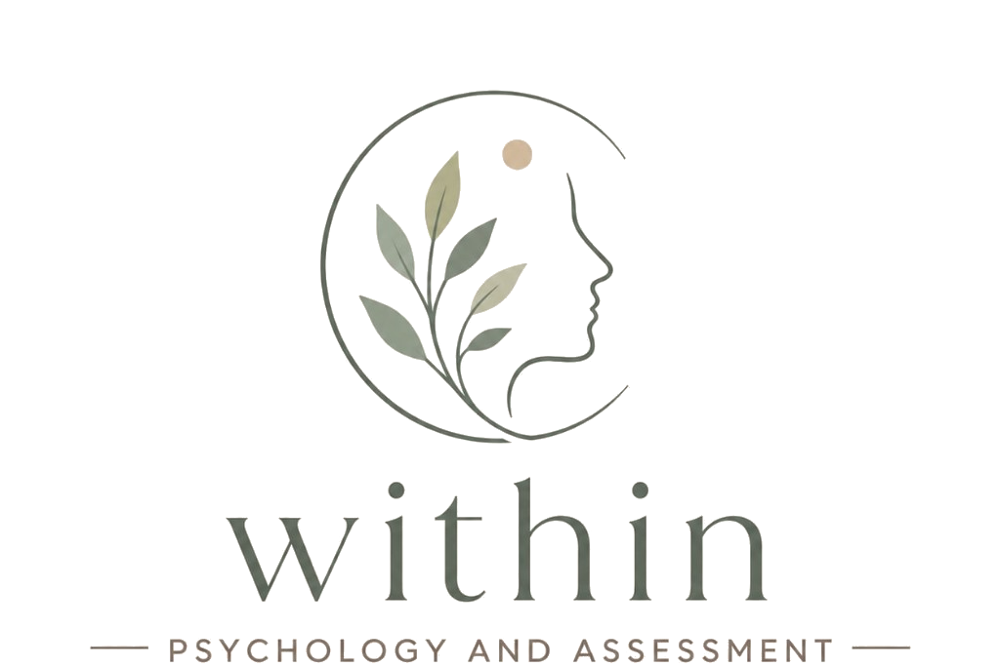

Corporate Coaching and Consulting
Drawing on over 20 years of corporate experience, including senior leadership roles at Microsoft, Leah brings a unique combination of business experience and psychological expertise to leadership coaching and organisational consulting.
Having led global teams, managed complex business operations, and supported people through organisational change, Leah understands the challenges of leadership and the demands of today's workplaces.
Her approach combines practical business insight with evidence-based psychological principles to help individuals and organisations strengthen leadership capability, navigate workplace challenges, and create healthier, more effective working environments.
Services include:
- Leadership and executive coaching: Building self-awareness, confidence, emotional intelligence, and effective leadership skills.
- Communication and interpersonal effectiveness: Strengthening communication, managing difficult conversations, and navigating workplace relationships.
- Change and transition: Supporting leaders and teams through organisational change, career transitions, and periods of uncertainty.
- Workplace wellbeing and resilience: Support to address workplace stress, burnout, psychological wellbeing, and sustainable performance.
- Organisational consulting: Providing psychologically informed insights into team dynamics, employee engagement, leadership effectiveness, and workplace challenges.
Whether you're a leader looking to develop your capabilities or an organisation seeking to better support your people, Leah offers a collaborative, practical, and tailored approach grounded in real-world experience and psychological understanding.
Contact us to discuss your individual or organisational needs.